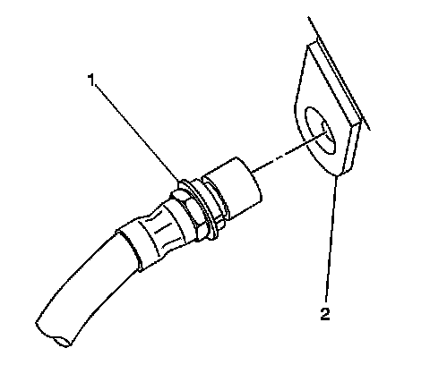
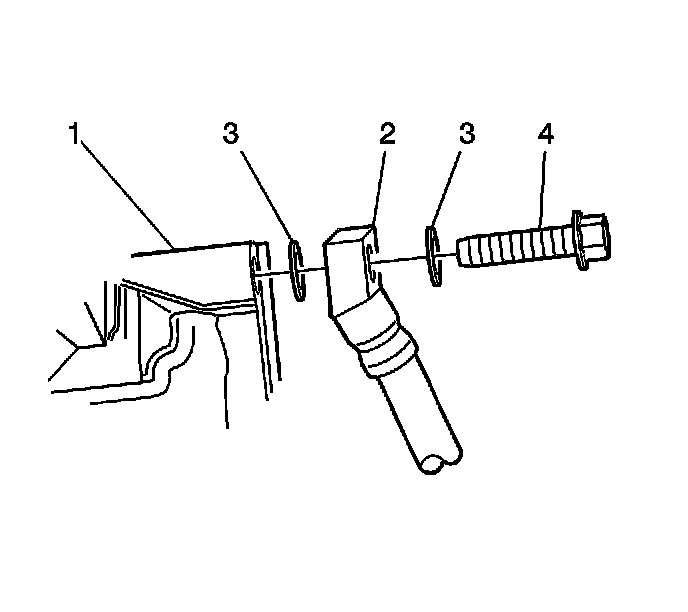

Rear Brake Hose Replacement
Rear Brake Hose Replacement
Caution: Refer to Brake Fluid Irritant Caution (Brake Fluid Irritant Caution) .
Notice: Refer to Brake Fluid Effects on Paint and Electrical Components Notice (Vehicle Damage Warnings) .
Removal Procedure
Important: The right rear brake hose is replaced as an assembly, with the intermediate brake hose assembly.
1. Raise and suitably support the vehicle. Refer to Lifting and Jacking the Vehicle (Service and Repair) .
2. Remove the left tire and wheel assembly. Refer to Tire and Wheel Removal and Installation (Service and Repair) .
3. Clean all dirt and foreign material from the brake hose and the brake pipe fittings.

Important: Install a rubber cap or plug to the exposed brake pipe fitting end in order to prevent brake fluid loss and/or contamination.
4. Disconnect the brake hose (3) from the crossover pipe fitting (1).
5. Lift the retaining clip over the end of the brake hose.
6. Using a flat-bladed tool, remove the brake hose retainer (2) from the brake hose (3).

7. Remove the brake hose (1) from the frame assembly (2).

8. Remove the brake hose to caliper bolt (4) from the brake caliper (1).
9. Remove the brake hose (2) from the vehicle.
10. Place a shop towel on a hard surface.
11. Tap the threaded end of the brake hose to caliper bolt (4) on the shop towel to remove the gasket (3) from the bolt.
12. Remove and discard the 2 copper brake hose gaskets (3). These gaskets may be stuck to the brake caliper (1) and/or the brake hose end (2).
Important: Install a rubber cap or plug to the exposed brake pipe fitting end in order to prevent brake fluid loss and/or contamination.
13. Install a rubber plug into the brake hose to caliper bolt hole of the brake caliper.
Installation Procedure
1. Remove the rubber plug from the brake hose to caliper bolt hole of the brake caliper.
Important: Install NEW copper brake hose gaskets.
2. Assemble the brake hose, the NEW copper brake hose gaskets (3) and the brake hose bolt (4) to the brake hose (2).
Notice: Refer to Fastener Notice (Fastener Notice) .
3. Install the brake hose to caliper bolt (4) to the brake caliper (1).
Tighten the brake hose to caliper bolt to 50 N.m (37 lb ft).
Notice: Make sure the brake hose is not twisted or kinked after installation. Damage to the hose could result.
4. Install the brake hose (1) to the frame assembly (2).
5. Install the brake hose retainer (1) to the brake hose (3).
6. Remove the rubber cap or plug from the crossover pipe fitting end.
7. Install the brake pipe fitting (1) to the brake hose (3).
Tighten the brake pipe fitting to 18 N.m (13 lb ft).
8. Bleed the hydraulic brake system. Refer to Hydraulic Brake System Bleeding (Pressure) (Service and Repair)Hydraulic Brake System Bleeding (Manual) (Service and Repair) .
9. Install the left tire and wheel assembly. Refer to Tire and Wheel Removal and Installation (Service and Repair) .
10. Lower the vehicle.